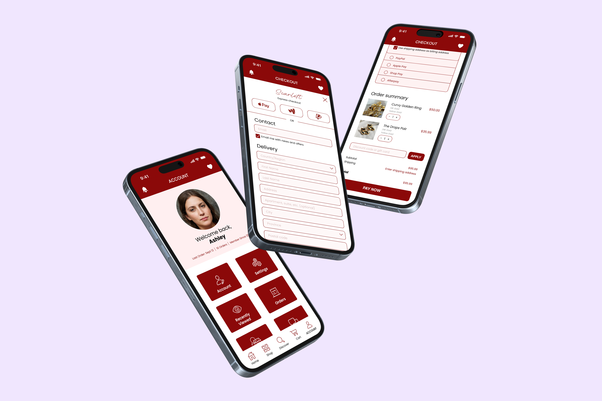
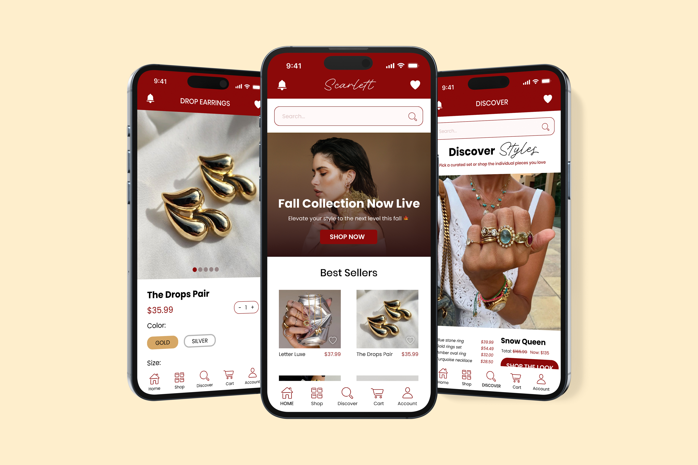
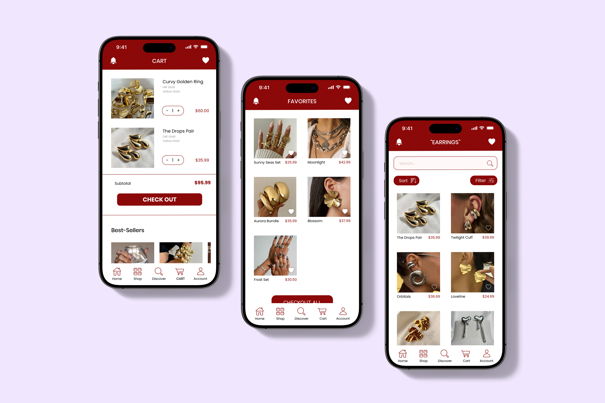
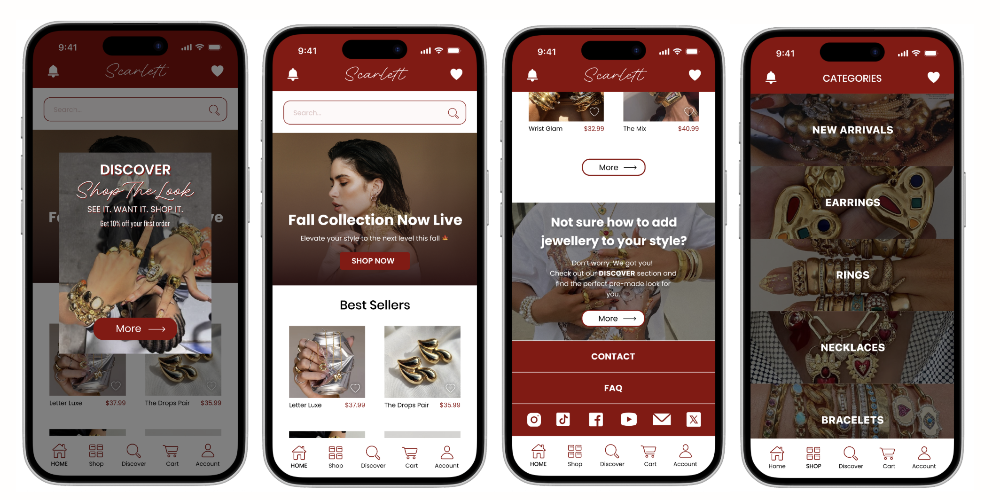
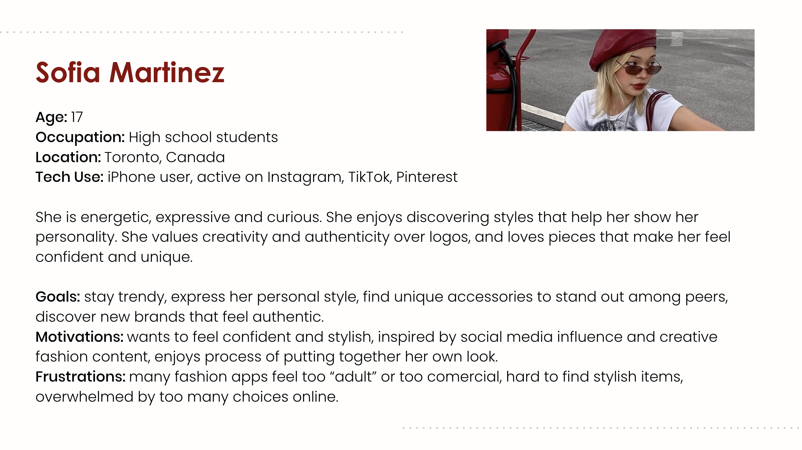
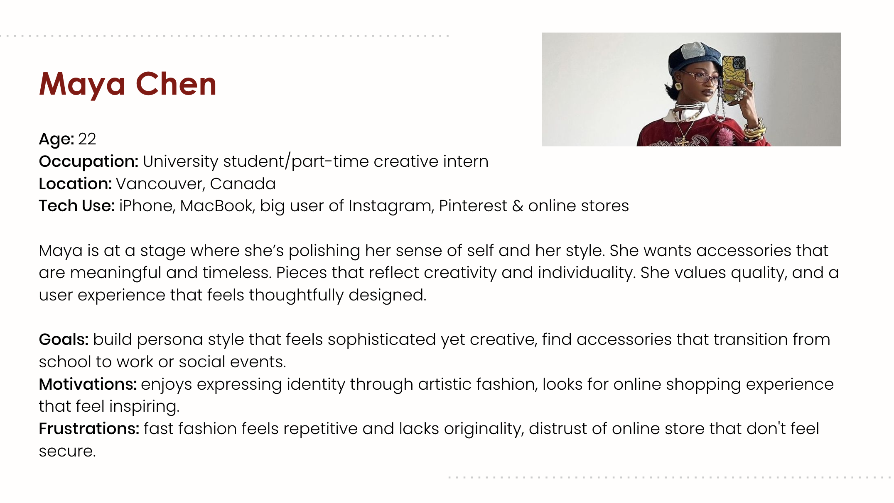
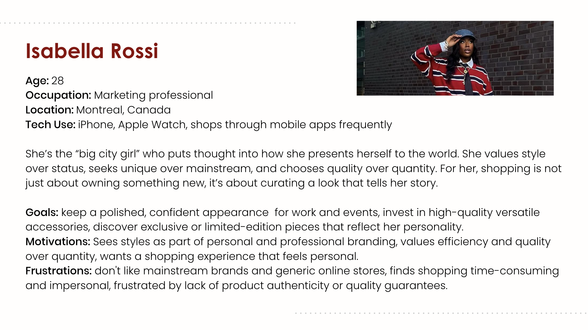

Project
Scarlett 💍
UX/UI for jewelry shopping app concept



Overview
About This Project
Scarlett is designed for young, fashion-conscious women seeking unique, high-quality jewelry. The app focuses on delivering a curated, premium shopping experience that emphasizes self-expression, authenticity, and ease of styling through thoughtfully designed interfaces and guided shopping features.
This project explored how UX design can elevate digital fashion retail beyond fast-fashion experiences. Through competitive analysis, user personas, and journey mapping, we identified user needs around trust, inspiration, and simplicity.The final prototype presents a sleek, modern interface with clear navigation, high-quality visuals, and a guided features that reduces styling uncertainty. This project highlights how curated content, visual consistency, and user-centered design can create more meaningful and trustworthy digital shopping experiences in today’s fashion landscape.
Challenge
Main Problem
The main problem is that users are overwhelmed by fast fashion and repetitive styles. They want digital experiences that feel curated, aesthetic, and reliable, mirroring boutique-level service. Additionally, many users find it difficult to buy accessories. They struggle to style jewelry confidently and wish the process felt easier, more guided, and more intuitive. That's why We introduced a feature that lets users purchase complete, pre-styled looks at a lower price. This experience removes the guesswork from styling and makes buying jewelry simpler and more intuitive. Users can browse sets, feel confident in their choices, and enjoy a more guided shopping experience while saving money.
Role
My Role
UX/UI Designer: concept development, visual direction, prototyping, and user testing. Focused on visual identity, UX and shopping experience refinement.

The Structure
Designing With Purpose
Our main goal was to deliver a sleek, modern, and premium-feeling experience that reflects the brand’s trendy streetwear jewelry focus while keeping the interface approachable and centered on celebrating unique pieces that help young urban women express their individuality. Use clean layouts, bold visuals, and intuitive navigation to make browsing and purchasing effortless, and ensure the color palette, typography, and imagery consistently reinforce the brand’s fashion identity. Prioritize high-quality, aesthetic photography styled with vintage-inspired fashion to create an authentic and compelling connection with the audience.
Discover - Define - Design
Who Were We Designing For?
Our main buyer is a young female who lives in or around urban areas and enjoys expressing herself through fashion. She sees accessories as a key part of her identity and, rather than following the boring popular trends, she looks for unique, creative, and high-quality pieces that help her stand out and reflect who she is.
Demographic Info:
- Age Range: 16 to 30 years old.
- Location: Big cities or metropolitan areas.
- Lifestyle: students, young-bold professionals, fashion-lovers, creatives with an active social life.
- Income level: moderate to high. Willing to invest in quality and uniqueness.
- Device use: big mobile users, primarily iOS.
User Needs:
- A smooth, trustworthy shopping experience
- Unique and creative accessories that reflect personal style
- Authenticity and transparency from sellers
- Convenient browsing and easy checkout
Psychographic Info:
- Values: self-expression, confidence, and authenticity.
- Personality: trend-aware but not trend-follower. Enjoys personalized and out-of-the-box aesthetics.
- Motivations: Wants to look stylish and put-together always without having to rely just on popular brand names.
- Interests: fashion, design, art, social media inspiration (Pinterest & Instagram).
- Shopping behaviour: prefers brands that offer exclusivity, style inspiration, and a smooth digital experience.
- Aesthetic Preferences: leans toward vintage-inspired or contemporary luxury styles.
Research
Competitive Research Summary
We analyzed three jewelry apps (Evry Jewels, GLD, and STUDIOCULT) to understand visual identity, navigation patterns, user flow, and branding strategies across affordable, luxury, and artistic jewelry markets.
| App Name | Key Findings |
|---|---|
|
Evry Jewels |
Trendy and affordable with strong influencer culture, but the app feels cheap due to tight spacing, outdated graphics, and forced add-ons during checkout. Good use of category images, FAQs, and size guides that we plan to adapt. |
|
GLD |
Clean, modern, luxurious interface with excellent spacing, premium photography, and highly organized navigation. Strong brand identity but high prices and a celebrity-focused brand feel may alienate some users. |
|
STUDIOCULT |
Artistic, experimental, and visually unique with neon accents, playful typography, and GIFs. Creative but sometimes repetitive and less polished in UX, with elements like non-collapsible sections and inaccessible pages before login. |
SWOT Summary Across Competitors
Strengths (S)
Distinct brand identities: trendy, luxury, and artistic. Solid influencer partnerships and social media influence.High-quality imagery and recognizable color systems.Diverse product ranges and curated collections.
Weaknesses (W)
UX issues such as forced add-ons, outdated banners, repetitive categories, or confusing flows. Some apps feel cheap while others feel inaccessible due to high price points. Limited personalization and customization options. Lack of model photography in some brands reduces relatability.
Opportunities (O)
Increasing demand for stylish, accessible jewelry with stronger brand storytelling. Room for more personalization, recommendations, recently viewed, guided support. Potential for curated looks, better imagery, and improved category systems.
Threats (T)
Highly saturated jewelry and accessories market. Fast-changing trends + algorithmic unpredictability. Competition from luxury and fast-fashion brands with bigger budgets. Risk of poor UX lowering brand trust, especially for online-only stores.


